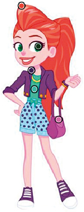

Tipografía
En esta segunda sección se presenta la familia tipográfica y la paleta cromática elegida para el armado de los sitios web de Lila Draper.
Para el diseño del sitio, se eligió la familia tipográfica Montserrat, ya que tiene como característica principal ser una Sans Serif y por ende permitir una clara y muy buena legibilidad para el usuario. Esta familia tiene una gran cantidad de variables, las cuales fueron seleccionadas y utilizadas para generar jerarquía de lectura en cada sección de la página.
A continuación, te brindamos una imagen donde se presenta esta familia tipográfica junto con sus variables utilizadas:
Montserrat - Regular ABCDEFGHIJKLMNÑOPQRSTUVWXYZ abcdefghijklmnñopqrstuvwxyz 1234567890
Montserrat - Medium ABCDEFGHIJKLMNÑOPQRSTUVWXYZ abcdefghijklmnñopqrstuvwxyz 1234567890
Montserrat - SemiBold ABCDEFGHIJKLMNÑOPQRSTUVWXYZ abcdefghijklmnñopqrstuvwxyz 1234567890
Montserrat - Bold ABCDEFGHIJKLMNÑOPQRSTUVWXYZ abcdefghijklmnñopqrstuvwxyz 1234567890
Paleta cromática
Se eligió la paleta cromática de la gama del Violeta, Naranja y Verde, ya que estos colores remiten a la escencia del personaje. Sus cambios de saturación y combinaciones provocan una jerarquía de elementos en cada parte de la página. Les mostramos la paleta y su composición hexadecimal, y la imagen de la cual se tomó esta paleta:
Muestra de paleta cromática y su composición hexadecimal:

Aquí se pueden observar claramente lo que se mencionaba más arriba, cada color tiene su composición hexadecimal, lo que lo hace único e irrepetible.
Por último, muestra de la imagen tomada de ejemplo, esto se debe a que desde la vestimenta del personaje se pudieron extraer los colores identitarios de la misma para crear su página web.
